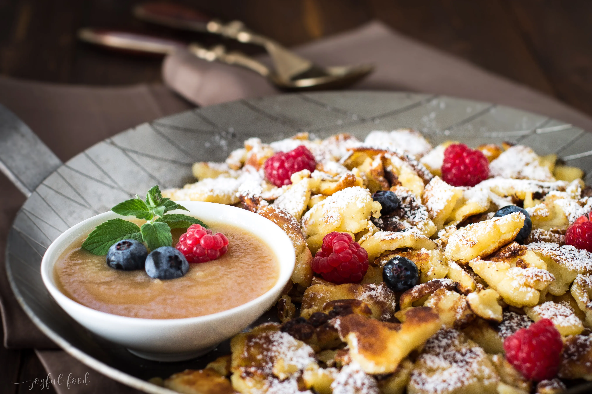

Kaiserschmarrn

| 2 | Eier | |
| 100 | g | Mehl |
| 200 | ml | Milch |
| 3 | EL | Zucker |
| 1 | Prise | Salz |
| nach Belieben Rosinen |
Zubereitung
- Das Eiweiß vom Eigelb trennen und in eine kleine Rührschüssel geben.
- Eigelb mit Mehl, Zucker, Milch und Salz in einer anderen Schüssel zu einem dickflüssigen Teig glatt rühren, bis keine Klumpen mehr zu sehen sind.
- Den Teig 30 Minuten ruhen lassen.
- Das Eiweiß sehr steif schlagen und vorsichtig unter den Teig unterheben.
- Fett in einer großen Pfanne erhitzen.
- Den Teig vorsichtig hinein gießen und 2 - 3 Minuten fest werden lassen. Die Unterseite sollte schön goldbraun werden.
- Nach belieben Rosinen darüber streuen.
- Den Teig mit Hilfe eines Pfannenwenders wenden und wieder goldbraun backen.
- Mit zwei Gabeln vorsichtig in mundgerechte Stücke teilen. Mit 2 EL Zucker bestreuen und noch einmal durch schwenken, damit der Zucker karamellisieren kann.
- Den warmen Kaiserschmarrn mit Puderzucker bestreuen und sofort servieren. Dazu schmeckt Vanilleeis oder Apfelmus.
NOTIZEN
Mit einer großen Portion Apfelmus serviert, schmeckt er einfach nur himmlisch.Rezept erstellt von